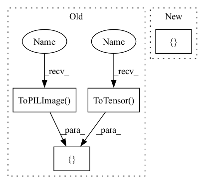

Pattern ID :15299

Before Change
size = config.resolution
self.transform = transforms.Compose(
[
transforms.ToPILImage(),
transforms.Resize(size=int(1.1 * size)),
transforms.CenterCrop(size=size),
transforms.ToTensor(),
transforms.Normalize(mean, std),
]
)
After Change
if config.resize:
transforms += [
torchvision.transforms.Resize(size=int(1.1 * config.resize)),
torchvision.transforms.CenterCrop(size=config.resize),
]
transforms += [
In pattern: SUPERPATTERN
Frequency: 3
Non-data size: 4
Instances
Fragment ID: 51969560
Project Name: kaifishr/pytorchrelevancepropagation
Commit Name: 1cedb1dc13da1746b58e096fb04b7d37ea8bd97d
Time: 2022-10-20
Author: kaifabi@posteo.net
File Name: projects/real_time_lrp/data_processing.py
M Class Name: DataProcessing
N Class Name: DataProcessing
M Method Name: __init__(3)
N Method Name: __init__(3)
M Parent Class:
N Parent Class:
M File Name: projects/real_time_lrp/data_processing.py
N File Name: projects/real_time_lrp/data_processing.py
M Start Line: 14
M End Line: 27
N Start Line: 14
N End Line: 31
'>
Before Change
self.data = self.dataset.data
self.base_transform = transforms.ToTensor()
self.a_transform = transforms.Compose(
[
transforms.ToTensor(), // first, convert image to PyTorch tensor
transforms.ToPILImage(),
]
)
self.b_transform = transforms.Compose(
After Change
]
)
self.a_transform = transforms.Compose(
[
torchvision.transforms.RandomRotation((-45, 45))
]
)
self.b_transform = transforms.Compose(
[
'>
Fragment ID: 51969555
Project Name: jameschapman19/cca_zoo
Commit Name: a7d5f6e5f6cc29059f96035a8dfad4eee058bf32
Time: 2021-11-17
Author: james.chapman.19@ucl.ac.uk
File Name: cca_zoo/data/toy.py
M Class Name: Noisy_MNIST_Dataset
N Class Name: Noisy_MNIST_Dataset
M Method Name: __init__(4)
N Method Name: __init__(4)
M Parent Class: Dataset
N Parent Class: Dataset
M File Name: cca_zoo/data/toy.py
N File Name: cca_zoo/data/toy.py
M Start Line: 84
M End Line: 112
N Start Line: 98
N End Line: 117
'>
Before Change
size = config.resolution
self.transform = transforms.Compose(
[
transforms.ToPILImage(),
transforms.Resize(size=int(1.1 * size)),
transforms.CenterCrop(size=size),
transforms.ToTensor(),
transforms.Normalize(mean, std),
]
)
After Change
mean = [0.485, 0.456, 0.406]
std = [0.229, 0.224, 0.225]
transforms = [torchvision.transforms.ToPILImage(), ]
if config.resize:
'>
Fragment ID: 51969556
Project Name: kaifishr/pytorchrelevancepropagation
Commit Name: 1cedb1dc13da1746b58e096fb04b7d37ea8bd97d
Time: 2022-10-20
Author: kaifabi@posteo.net
File Name: projects/real_time_lrp/data_processing.py
M Class Name: DataProcessing
N Class Name: DataProcessing
M Method Name: __init__(3)
N Method Name: __init__(3)
M Parent Class:
N Parent Class:
M File Name: projects/real_time_lrp/data_processing.py
N File Name: projects/real_time_lrp/data_processing.py
M Start Line: 14
M End Line: 27
N Start Line: 14
N End Line: 31
'>
Before Change
def default_transform(self):
return transforms.Compose(
[
transforms.ToPILImage(),
transforms.Resize(256),
transforms.CenterCrop(224),
transforms.ToTensor(),
]
)
After Change
self.transform = self.train_transform()
def default_transform(self):
return EurosatTransforms({})
def get_item_name(self, index):
return self.data[index][0]
'>
Fragment ID: 51969559
Project Name: biasvariancelabs/aitlas
Commit Name: 3c6a0d8d6217e484f140c6f9be536239c32a92dc
Time: 2020-10-26
Author: ivan.kitanovski@gmail.com
File Name: aitlas/datasets/eurosat.py
M Class Name: EurosatDataset
N Class Name: EurosatDataset
M Method Name: default_transform(1)
N Method Name: default_transform(1)
M Parent Class: DatasetFolderMixin,SplitableDataset
N Parent Class: DatasetFolderMixin,SplitableDataset
M File Name: aitlas/datasets/eurosat.py
N File Name: aitlas/datasets/eurosat.py
M Start Line: 52
M End Line: 59
N Start Line: 52
N End Line: 52